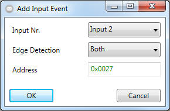
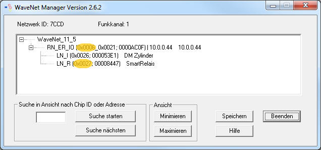

Create Events - Input Events

In order to trigger an input event, the EventMessenger software needs the
number of the input, the edge type (e.g. rising edge: from logical "0" to
logical "1") and the address information from the "locknode" or "routernode with
io functionality" device
that has fired the input event.
Please follow the steps below to create such setup:
- Please start by selecting the Input that should be watched at.
- Define the type of state whose changing will be triggered (also known as
"edge detection").
- Type the address of the regarded device in hexadecimal format.
- Supportet devices are:
- WN.LN.C.IO
- WN.LN.R.IO
- WNM.LN.C.IO
- WNM.LN.R.IO
- WNM.RN.ER.IO
- WNM.RN.R.IO
- You can use the WaveNetManager Software that was shipped with your
LSM.Basic.Online Software to determine the address as follows:

- Click on "OK" to finish the Input Event Configuration.